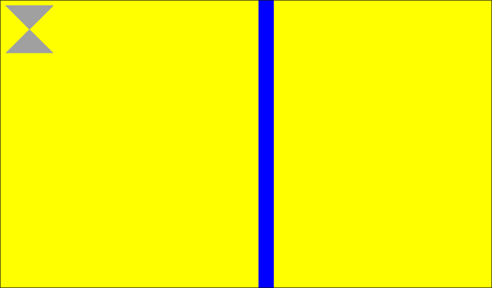

Display software-rasterized content using multiple windows in a hierarchy
win-vsync
QNX OS
The win-vsync binary is a command-line application that demonstrates using multiple windows in a hierarchy.
The main elements displayed: a vertical blue bar, an hourglass, and a background are implemented as three separate windows. The background window is the parent window with the blue bar and the hourglass elements drawn in its child windows.
To run win-vsync:
# win-vsync
